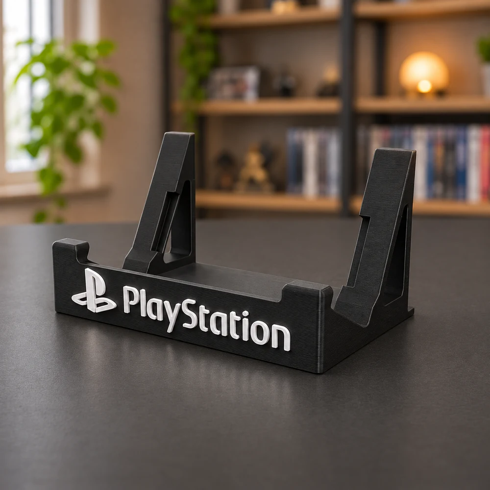
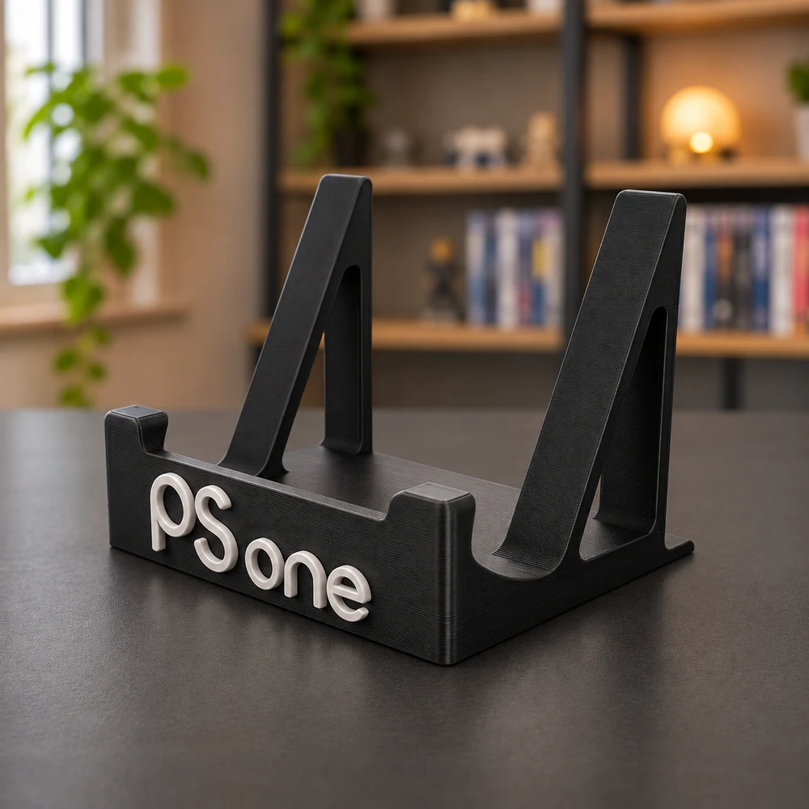
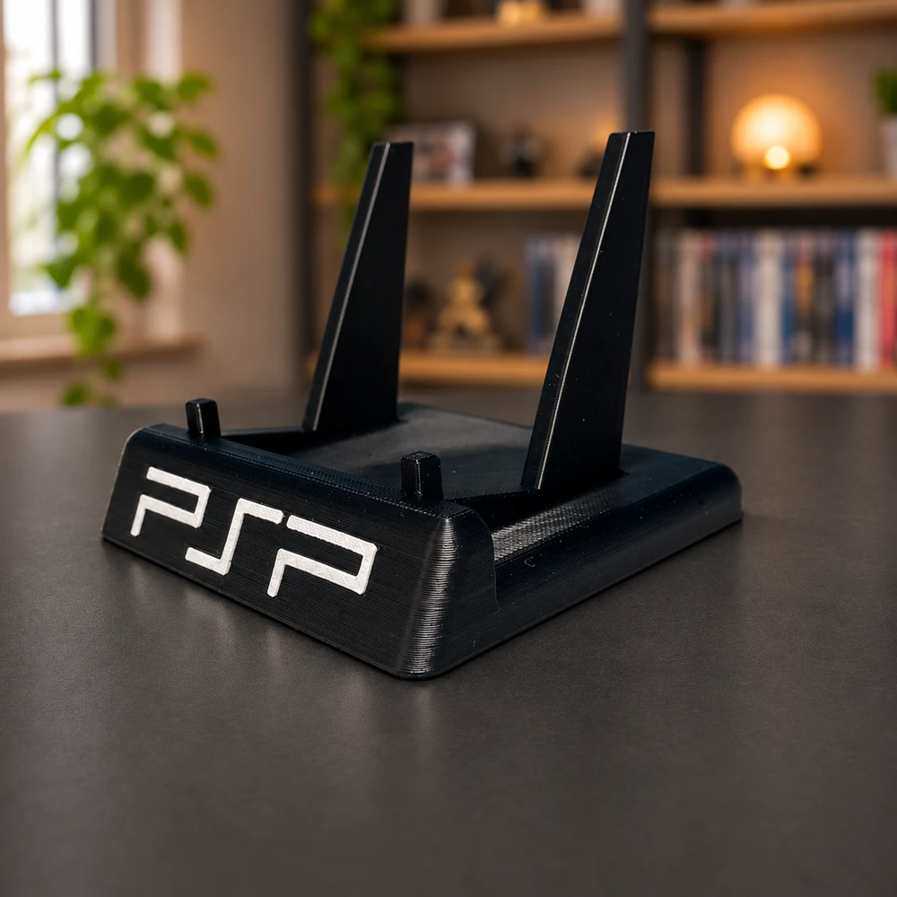
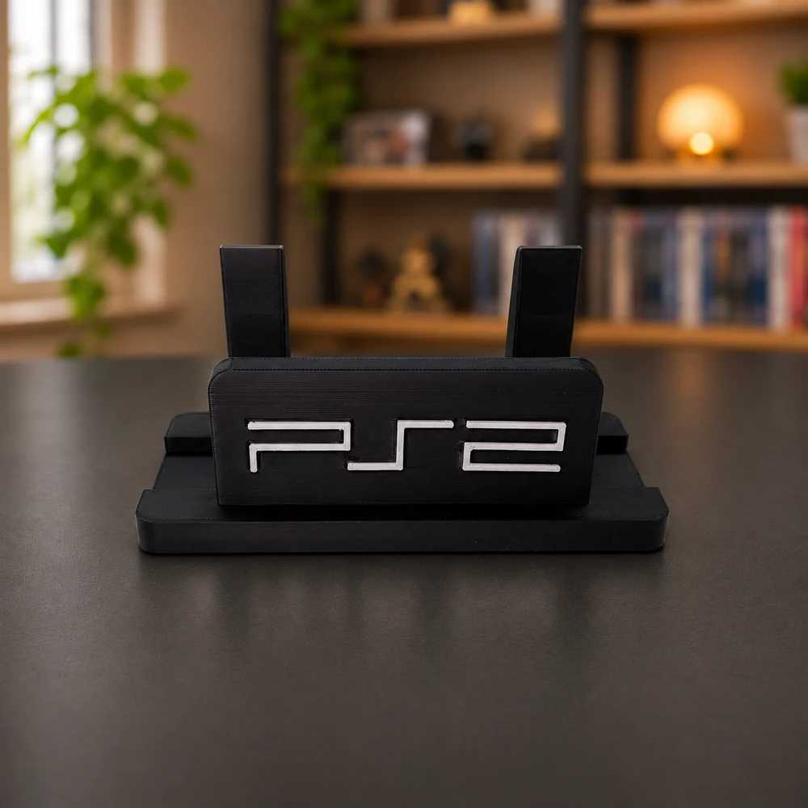
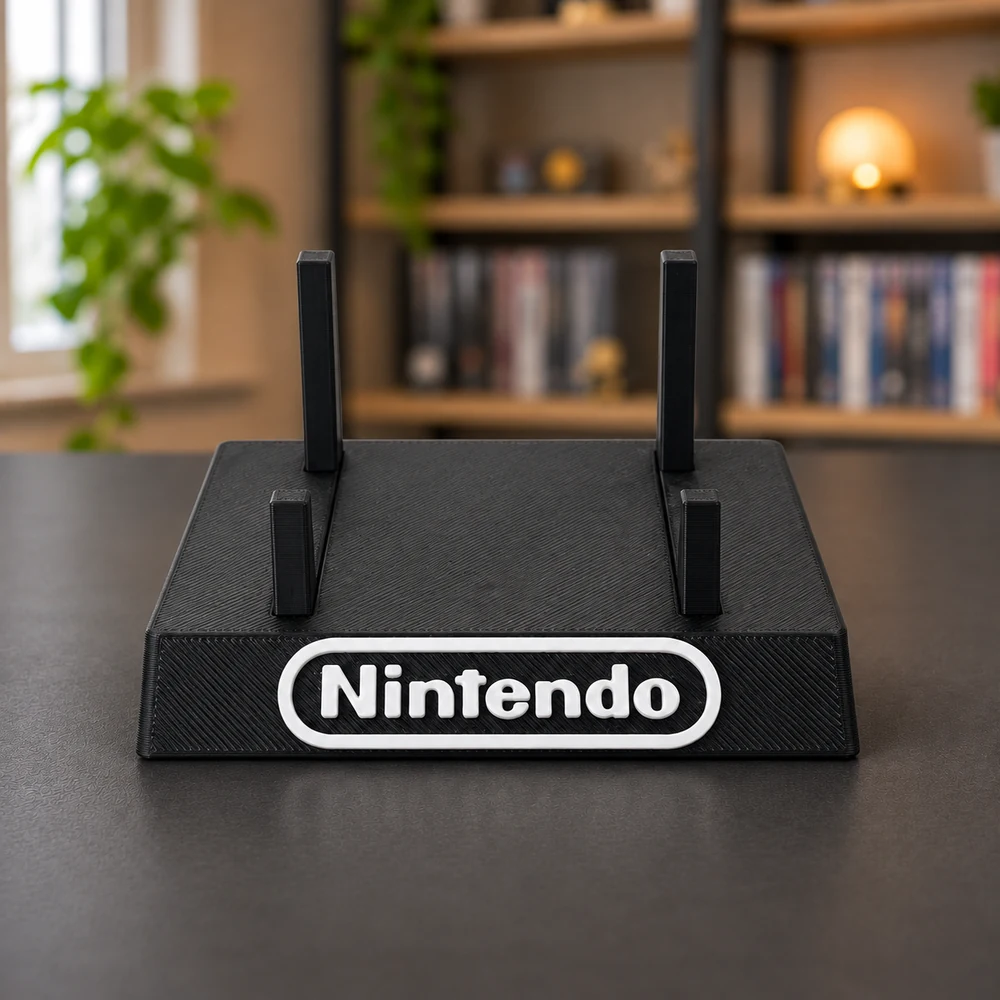
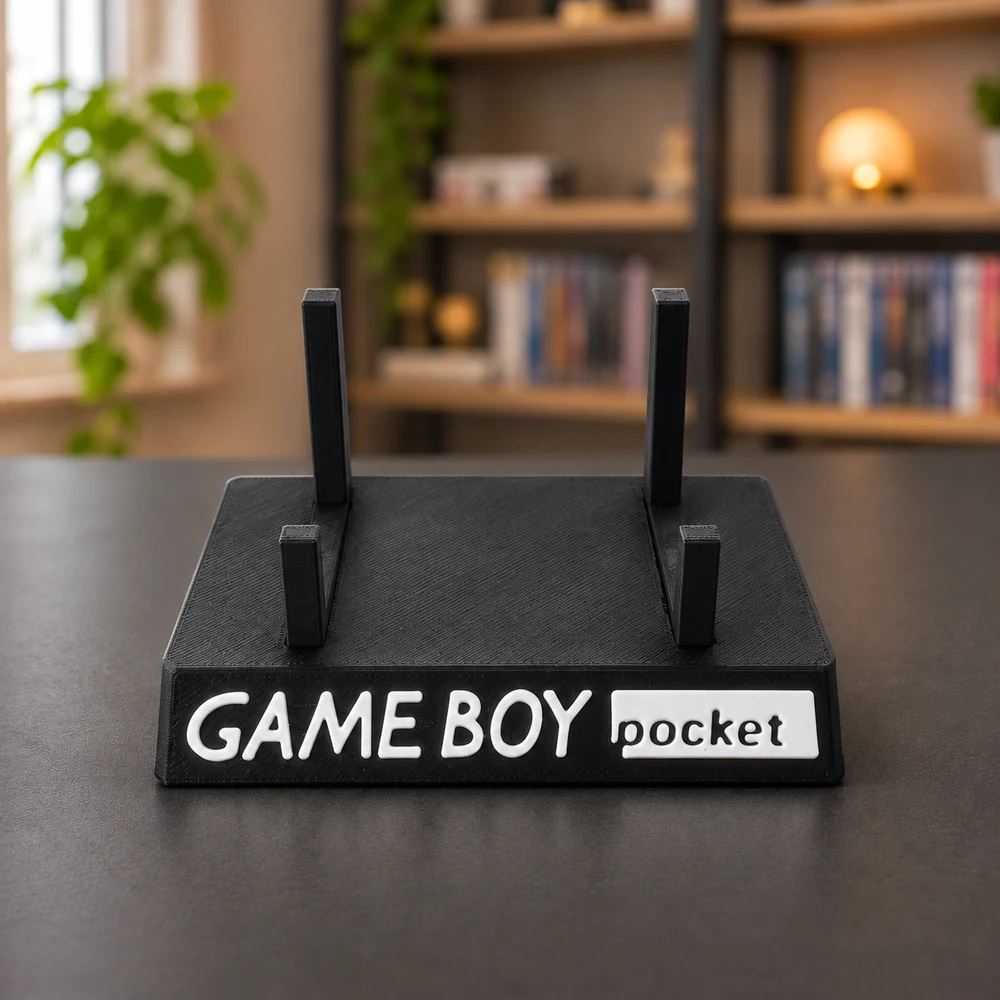
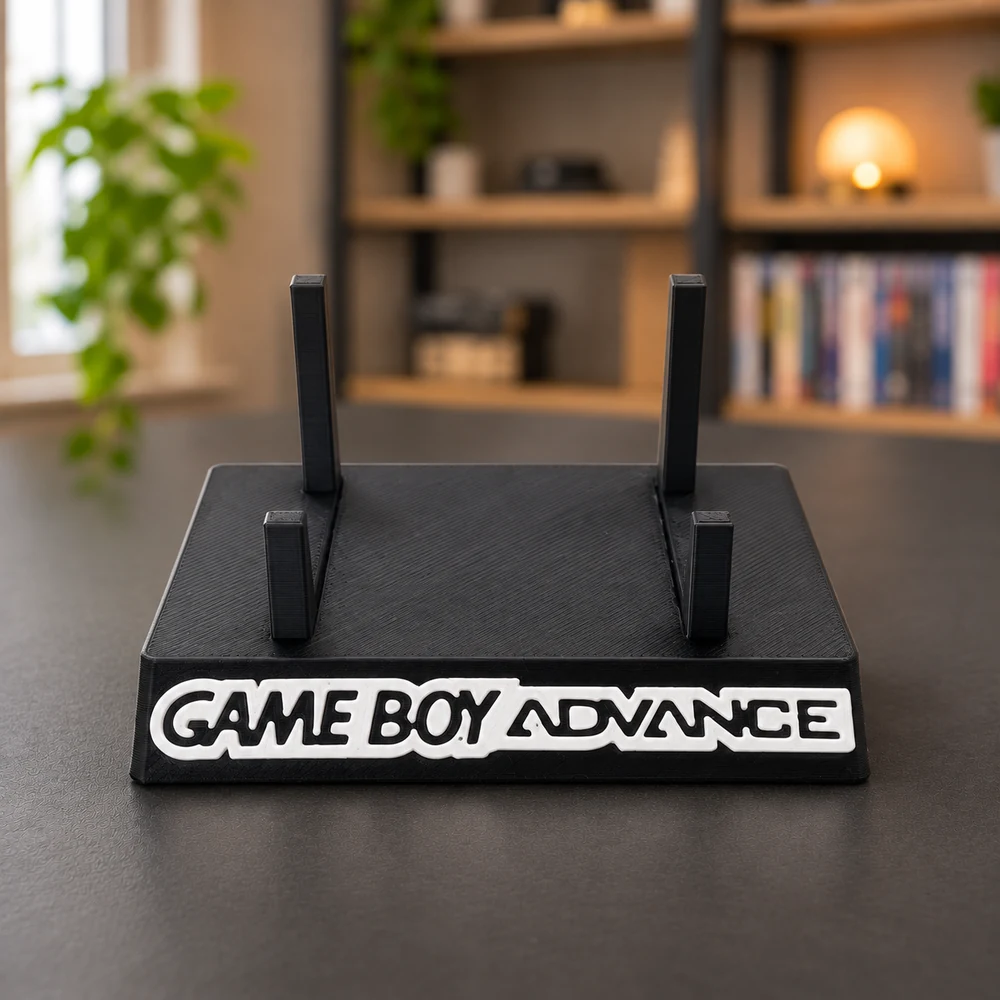
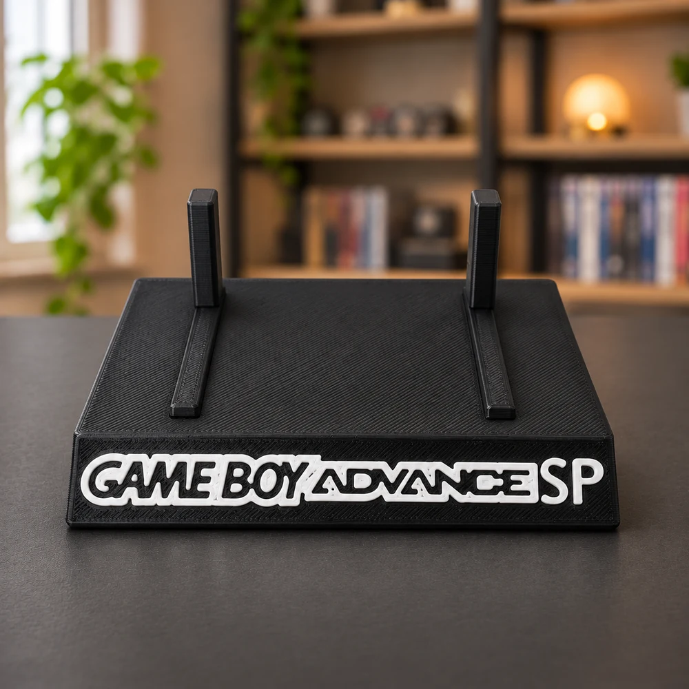
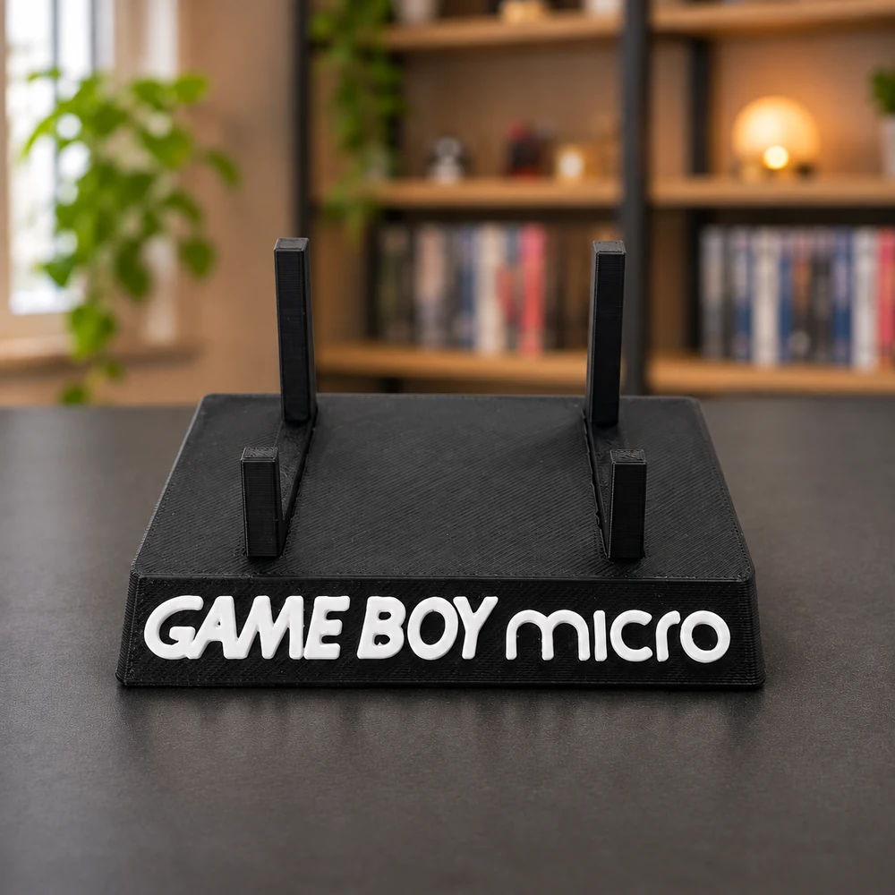
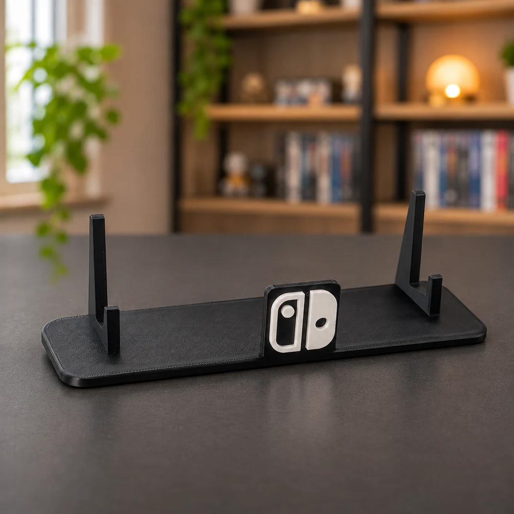

PlayStation
Stand PlayStation 1
Stand nero con scritta PlayStation bianca in rilievo, dedicato alla prima PlayStation.
Prezzo su richiestaRichiedi →
Stand stampati in 3D per PlayStation, Game Boy e Nintendo Switch. Scegli il modello per la tua console e richiedi un preventivo con quantità e colori desiderati.
Stand mostrati senza console, con luce e ambientazione elaborate digitalmente. Puoi confrontarli con le foto originali. La richiesta riguarda solo lo stand. Produzione e spedizione indicative entro 5 giorni dalla conferma; consegna del corriere aggiuntiva. Costi e personalizzazioni saranno specificati nel preventivo.

Stand nero con scritta PlayStation bianca in rilievo, dedicato alla prima PlayStation.

Supporto da esposizione per PS one, con appoggi inclinati e scritta bianca in rilievo.

Ambientazione da riferimento originaleStand per esporre la PSP, con scritta frontale dedicata. Indica la versione della tua console nella richiesta.

Ambientazione da riferimento originaleStand con scritta PS2 frontale, disponibile nelle varianti per PS2 Slim e PS2 originale (Fat). Specifica il modello e la revisione della console nel preventivo.

Base nera con logo Nintendo bianco, per esporre il Game Boy originale.

Stand con scritta Game Boy Pocket in rilievo e appoggi per la console portatile.

Espositore dedicato al Game Boy Color con scritta bianca su base nera.

Supporto per il Game Boy Advance dal formato orizzontale, con scritta frontale in rilievo.

Base dedicata al Game Boy Advance SP, con scritta bianca in rilievo e appoggi per la console.

Stand compatto con scritta Game Boy Micro bianca in rilievo.

Supporto da esposizione con logo Switch centrale, compatibile con Nintendo Switch e Nintendo Switch OLED.
Descrivi la console, lo spazio disponibile e la tua idea: valutiamo insieme una soluzione su misura.